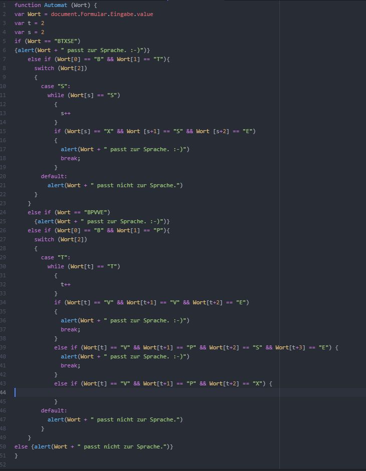

"Simulieren und visualisieren Sie die Reber Grammar (RG) als Deterministischen Endlichen Automaten (DEA). ACHTUNG: Sie sollen NICHT die Embedded Reber Grammar (ERG), sondern nur den inneren Teil, die Reber Grammar (RG), betrachten. Dabei sollen Sie zunächst zufällige Zeichenketten generieren. Mithilfe des DEA ist es leicht korrekte Zeichenketten zu erstellen. Alternativ lassen sich auch falsche Zeichenketten, die nicht erkannt werden, erzeugen. Modifizieren Sie dazu mithilfe des Automaten eine korrekte Zeichenkette, indem Sie an einer bestimmten Stelle eine fehlerhafte Eingabe anhand einer Kannte, die nicht existiert, erzeugen, und diese gegen die korrekte austauschen. In einem zweiten Schritt prüfen Sie die Eingabe mittels des DEA."
Zur Umsetzung der Projektaufgabe gehörten mehrere Schritte. Diese werden im folgenden erläutert.
Zu Schritt 1 gehörte der Nachbau des DEA im gestellten Automaten-Simulator. In diesem wurden von mir verschiedene Beispielwörter simuliert. Daraus liesen sich Regeln der Grammatik erarbeiten, welche dann auf Javascript übertragen werden konnten.
In einem zweiten Schritt wurden dann erste Test-Seiten erstellt, welche unter Verwendung von CSS und HTML ausprobiert wurden. Auf Basis daraus wurde eine erste Index-Seite erstellt. Diese soll als Navigator für alle Projekte dienen. Anschließend wurde die Projektseite für Projekt1 erstellt. Das verwendete Softwareprodukt ist Atom in der Version 1.60.0 für Windows. Zur Nutzung einer Eingabe wurde Javascript verwendet. In der Datei wurde die Logik zur Erkennung von Wörtern der Sprache implementiert. Der Code dafür sieht wie folgt aus:
Die Visualisierung sollte umgesetzt werden indem verschiedene grafische Elemente aus gojs.net und p5 genutzt werden. Dazu wurden die jeweiligen Libaries geladen und verschiedene Tutorials durchgearbeitet. Eine implementierung gelang dabei nicht. Eine Lösung durch den Wechsel des Browsers, der Libaries und der Verwendung von Apache als lokalen Netzwerkserver brachte keine Lösung. Der Download der Go.JS Beispiele und Ausführung der lokal gespeicherten Bespiele gelang. Diese konnten allerdings nicht in das Projekt integriert werden. Daher musste auf eine alternative Lösung durch Verwendung erstellten Blockdiagrammen zurückgegriffen werden. Diese Blockdiagramme konnten dann lediglich als Bilder dargestellt werden.
Zur Interaktion und Prüfung von Wörtern besitzt die Webseite ein Eingabefeld. In dieses könnnen Wörter eingeben werden. Diese werden geprüft, ob sie zur Sprache gehören und dann entsprechend ausgegeben.
